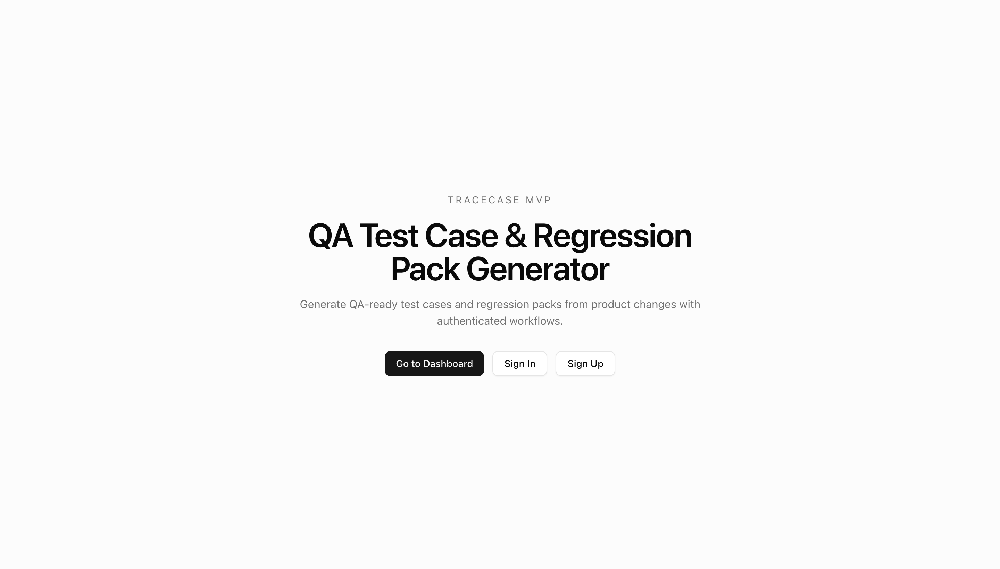

I build reliable backend systems and product-grade software.
I work across Go, Java, Python, and TypeScript to ship distributed systems,
internal platforms, and early-stage products. Currently building TraceCase, a
QA automation product for B2B SaaS teams.
TraceCase is the product I'm building right now: a QA
automation workflow for B2B SaaS teams. Building it keeps me close to real
product constraints, workflow design, and shipping velocity.
I'm working with a small number of design partners, and I'm still
actively exploring the right backend, platform, or product-engineering role.
Featured product build plus backend engineering systems
TraceCase
TypeScript

QA test case and regression pack generator for B2B SaaS teams with
requirement snapshots, asynchronous generation jobs, review workflows, and
traceable audit events.
Impact: turns messy requirements into auditable draft test packs with faster
review cycles.
Requirement-to-test traceability with versioned source snapshots
Async generation and export pipeline using Inngest jobs
Role-based review, approval, and immutable locked packs
Production delivery across fintech, infra, and automation
Software Engineer (Full Stack) | Budgetwise.ai
Jan 2026 - Present | Remote, USA
Shipped backend endpoints with Firebase, delivered React modules, and integrated
AI-powered classification to reduce manual content review.
Platform / Infrastructure Support Engineer | AWS Data Center
May 2025 - Nov 2025 | New Carlisle, USA
Built workflow logic for infrastructure provisioning, supported AWS services at
large record volume, and improved incident response through production monitoring.
Senior Systems Engineer | Royal Bank of Scotland (Infosys)
Mar 2020 - May 2022 | Chennai, India
Migrated high-volume core records, designed SQL reconciliation pipelines, and
maintained Java/SQL batch jobs for regulatory workloads.
Systems Engineer | Toyota & Lexus North America (Infosys)
Mar 2019 - Feb 2020 | Chennai, India
Stabilized backend migration systems, authored validation scripts, and resolved
critical data and batch defects under release timelines.
Skill Stack
Backend-first toolkit with strong platform fundamentals